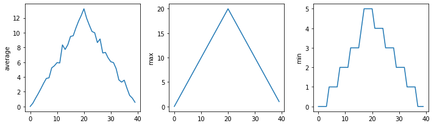
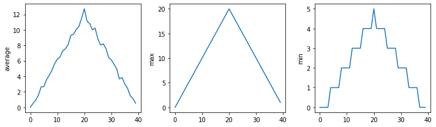
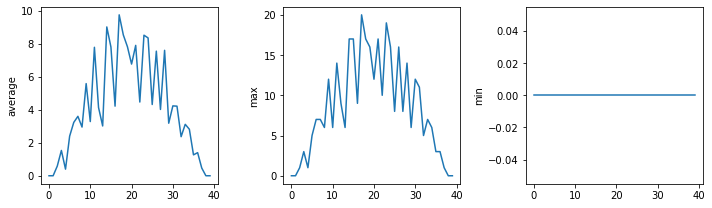

Writing functions#
Materials#
As humans, we can only keep a few items in our own working memory at a time. Trying to comprehend a Python script with hundreds of lines of code can be quite daunting.
Thankfully, we can make this easier by breaking programs down into
functions to make them easier to understand. We have used built-in
functions, like print() in the past, but we can also write our own
custom functions.
Custom functions help us understand larger/more complicated ideas by encapsulating separate parts of our program, allowing us to view each as a single “thing”. Importantly, it also lets us re-use pieces of code without having to duplicate dozens of lines of code over and over again.
Objectives:#
Define a function using
defwith a name, parameters, and a block of code.
# Import libraries
import numpy as np
import pandas as pd
import matplotlib.pyplot as plt
We can define a custom function using the keyword def (short for
“define”), followed by the desired function name, parentheses, and a
colon.
def print_greeting():
print('Hello!')
Defining a function does not run the code within it. You need to call the function to run it.
print_greeting()
Hello!
We can also add parameters to functions. Python matches the arguments in the call to the parameters in the function definition.
In the function call, we specify the values for year, month, and
day in same order in function definition.
Within the function, these parameters act like variables we have used before. However, they are only active within the scope of the function.
Parameters refer to what we specify in the function definition, and arguments are their values in the function call. However, if you mix them up, people will still know what you’re talking about!
def print_date(year, month, day):
joined = str(year) + '/' + str(month) + '/' + str(day)
print(joined)
print_date(1871, 3, 19)
1871/3/19
Or, we can name the arguments when we call the function, which allows us to specify them in any order:
print_date(month=3, day=19, year=1871)
1871/3/19
Functions may return a result (a value) to their caller using
return. Here we define a function called average() that takes a
list and returns the mean.
def average(values):
s = sum(values) # sum
n = len(values) # number of vals
return s/n
a = average([1, 3, 4])
print('average:', a)
average: 2.6666666666666665
We need to be careful defining functions. If this function is called on an empty list, for instance, we will get an error.
average([])
---------------------------------------------------------------------------
ZeroDivisionError Traceback (most recent call last)
average([])
s = sum(values) # sum
n = len(values) # number of vals
----> return s/n
ZeroDivisionError: division by zero
We can design functions in ways to avoid these errors by adding in conditionals.
def better_average(values):
average = None
if len(values) > 0: # list isnt empty
s = sum(values) # sum
n = len(values) # number of vals
average = s/n
return average
print(better_average([]))
None
None is a special keyword in Python with no value. It is not
equivalent to 0 or False.
Every function returns something. A function that doesn’t explicitly
return a value automatically returns None.
result = print_date(1871, 3, 19)
print('result of call is:', result)
1871/3/19
result of call is: None
Question 1#
What is the error in the code below?
def another_function
print("Syntax errors are annoying.")
print("But at least python tells us about them!")
print("So they are usually not too hard to fix.")
Solution
The function definition is missing the correction punctuation (()
and :):
def another_function():
...
Question 2#
What does this code return?
def report(pressure):
print('pressure is', pressure)
print('calling', report, 22.5)
Solution
Because we don’t actually call the report() function, the
print() statement in report() is not called. Printing
report without the paretheses just returns information about the
function, often called its representation. This includes its type
(function), name (report), and its location in memory
(e.g. 0x7fb43777e5e0).
calling <function report at 0x7fb43777e5e0> 22.5
Default values#
For the parameters we have defined, we can also provide default values.
def happy_birthday(name='Fred'):
print('Happy Birthday,', name)
happy_birthday('Sarah')
happy_birthday()
Happy Birthday, Sarah
Happy Birthday, Fred
When defining a function, we can use a combination of parameters with and without default values. However, parameters with default values must go after those without them.
def quadratic_equation(a, b, c, negative=False):
sqr_rt = (b**2 - 4*a*c)**(1/2)
if negative:
x = (-b - sqr_rt) / (2*a)
else:
x = (-b + sqr_rt) / (2*a)
return x
quadratic_equation(1, 7, 10)
-2.0
Question 3#
Does order of operations matter for defining and calling functions?
fahr_to_celsius(32)
def fahr_to_celsius(temp):
return ((temp - 32) * (5/9))
Solution
It does matter! Because the function is called before it is defined, we will get an error here. Functions must be defined before they are called:
def fahr_to_celsius(temp):
return ((temp - 32) * (5/9))
print('freezing point of water:', fahr_to_celsius(32), 'C')
print('boiling point of water:', fahr_to_celsius(212), 'C')
freezing point of water: 0.0 C
boiling point of water: 100.0 C
Composing Functions#
Now that we’ve seen how to turn Fahrenheit into Celsius, we can also write the function to turn Celsius into Kelvin:
def celsius_to_kelvin(temp_c):
return temp_c + 273.15
print('freezing point of water in Kelvin:', celsius_to_kelvin(0.))
freezing point of water in Kelvin: 273.15
What about converting Fahrenheit to Kelvin? We could write out the formula, but we don’t need to. Instead, we can compose the two functions we have already created:
def fahr_to_kelvin(temp_f):
temp_c = fahr_to_celsius(temp_f)
temp_k = celsius_to_kelvin(temp_c)
return temp_k
print('boiling point of water in Kelvin:', fahr_to_kelvin(212.0))
boiling point of water in Kelvin: 373.15
This is our first taste of how larger programs are built: we define basic operations, then combine them in ever-larger chunks to get the effect we want. Real-life functions will usually be larger than the ones shown here — typically half a dozen to a few dozen lines — but they shouldn’t ever be much longer than that, or the next person who reads it won’t be able to understand what’s going on.
Functions for tidying up code#
Functions are very useful for consolidating code for repurposing it.
Below we have an example of calculating the distance between two points without a function.
point1 = [1, 4]
point2 = [4,-2]
distance = ((point1[0] - point2[0]) ** 2 + (point1[1] - point2[1]) ** 2) ** 0.5
print(distance)
6.708203932499369
With this setup, if we want to calculate distance on any more points, we’ll have to repeat the code several times. This is known as code duplication, and can cause issues if there are any typos in the original code or if you want to make a change to code. In these cases, you will need to change every instance you’ve run it.
When you copy and paste to duplicate, you may also forget to update information.
point3 = [5, 11]
point4 = [2, 8]
distance1 = ((point3[0] - point4[0]) ** 2 + (point3[1] - point4[1]) ** 2) ** 0.5
print(distance1)
point5 = [5, 11]
point6 = [2, 8]
# easy to forget to change variable names!
distance1 = ((point3[0] - point4[0]) ** 2 + (point3[1] - point4[1]) ** 2) ** 0.5
print(distance1)
4.242640687119285
4.242640687119285
We can remove this by defining a function for calculating distance and simply running the function several times.
Limiting code duplication has an important benefit: if you need to change a feature of the code, you will only need to change it one place.
Additionally, this helps clean up the code. We’ve given the function an informative name, and you can easily check to see what the function does.
# Define a function to calculate the distance between two points
def calculate_distance(x1, x2):
d = ((x1[0] - x2[0]) ** 2 + (x1[1] - x2[1]) ** 2) ** 0.5
return d
# Calculate the distance between the points using the function
print(calculate_distance(point1, point2))
print(calculate_distance(point3, point4))
print(calculate_distance(point5, point6))
# Print the result
print("Distance:", distance)
6.708203932499369
4.242640687119285
4.242640687119285
Distance: 6.708203932499369
Now that we know how to wrap bits of code up in functions, we can make our inflammation analysis easier to read and easier to reuse. First, let’s make a visualize function that generates our plots:
def visualize(filename):
data = pd.read_csv(filename,header=None) # read in file
fig, ax = plt.subplots(1, 3, figsize=(10.0, 3.0)) # make blank plot
ax[0].plot(data.mean())
ax[0].set_ylabel('average')
ax[1].plot(data.max())
ax[1].set_ylabel('max')
ax[2].plot(data.min())
ax[2].set_ylabel('min')
fig.tight_layout()
plt.show()
Rather than jumbling this code together in one giant for loop, we can now read and reuse with a simple for loop:
partial_url = "https://raw.githubusercontent.com/DeisData/python/master/data/inflammation-0" # the part of the link all of the csv's share
filenames = [ partial_url + str(i) + ".csv" for i in range(1,4) ] # generates .../inflammation-01.csv through .../inflammation-04.csv
for filename in filenames:
print(filename)
visualize(filename)
https://raw.githubusercontent.com/DeisData/python/master/data/inflammation-01.csv

https://raw.githubusercontent.com/DeisData/python/master/data/inflammation-02.csv

https://raw.githubusercontent.com/DeisData/python/master/data/inflammation-03.csv

Limiting code duplication has an important benefit: if you need to change a feature of the code, you will only need to change it one place.
Question 4#
The code below takes 4 short DNA sequences and calculates the percentage of DNA bases that are either G or C for each of them. This runs the same process for each sequence.
Take the code below and reduce some of the code duplication by creating one or more functions, or with other approaches.
# initialize sequences
dna_sequence1 = 'CGACCAATAGTGATCCACGGATTCTCTGAAGAGTCAGCATGCGGGAAATATACGCACAACTAACGGGACGGCGATTAACGCCAAGCCTGGGCTGAATATT'
dna_sequence2 = 'TGCGGCAGGATTTCGGACCGAACCTTGTCACCCTTACATTCATGCATAGCAGGTTGCGTTGCGTGGCAGCGTGCCCACCACCTCCCGCTGGTTGCCCGTA'
dna_sequence3 = 'AAAGTTGTGGTACTAATCGTATTGTTGCATTGACCCATAAAGATCCTCATTTTACAGAGCACATGAGATCCCGTTGGTATCAACGCCTGATTCTTATAGG'
dna_sequence4 = 'GAGCGAGAGCTTACTGTGTGCTATCCCTCAAGATGCGTTGAAAAGTCAACTCACCAGATACTTAGGCCTGACGAGACATCGATTGCCGGTTCGAAAAGTG'
# sequence 1
As1 = 0
Ts1 = 0
Gs1 = 0
Cs1 = 0
for base in dna_sequence1:
if base == 'G':
Gs1 += 1
elif base == 'T':
Ts1 += 1
elif base == 'A':
As1 += 1
elif base == 'C':
Cs1 += 1
print("GC%:", (Gs1+Cs1)/(Gs1+Cs1+Ts1+As1))
# sequence 2
As2 = 0
Ts2 = 0
Gs2 = 0
Cs2 = 0
for base in dna_sequence2:
if base == 'G':
Gs2 += 1
elif base == 'T':
Ts2 += 1
elif base == 'A':
As2 += 1
elif base == 'C':
Cs2 += 1
print("GC%:", (Gs2+Cs2)/(Gs2+Cs2+Ts2+As2))
# sequence 3
As3 = 0
Ts3 = 0
Gs3 = 0
Cs3 = 0
for base in dna_sequence3:
if base == 'G':
Gs3 += 1
elif base == 'T':
Ts3 += 1
elif base == 'A':
As3 += 1
elif base == 'C':
Cs3 += 1
print("GC%:", (Gs3+Cs3)/(Gs3+Cs3+Ts3+As3))
# sequence 4
As4 = 0
Ts4 = 0
Gs4 = 0
Cs4 = 0
for base in dna_sequence4:
if base == 'G':
Gs4 += 1
elif base == 'T':
Ts4 += 1
elif base == 'A':
As4 += 1
elif base == 'C':
Cs4 += 1
print("GC%:", (Gs4+Cs4)/(Gs4+Cs4+Ts4+As4))
GC%: 0.5
GC%: 0.6
GC%: 0.4
GC%: 0.49
Solution
There are many ways to clean up this code. Here is one example.
# initialize sequences
dna_sequence1 = 'CGACCAATAGTGATCCACGGATTCTCTGAAGAGTCAGCATGCGGGAAATATACGCACAACTAACGGGACGGCGATTAACGCCAAGCCTGGGCTGAATATT'
dna_sequence2 = 'TGCGGCAGGATTTCGGACCGAACCTTGTCACCCTTACATTCATGCATAGCAGGTTGCGTTGCGTGGCAGCGTGCCCACCACCTCCCGCTGGTTGCCCGTA'
dna_sequence3 = 'AAAGTTGTGGTACTAATCGTATTGTTGCATTGACCCATAAAGATCCTCATTTTACAGAGCACATGAGATCCCGTTGGTATCAACGCCTGATTCTTATAGG'
dna_sequence4 = 'GAGCGAGAGCTTACTGTGTGCTATCCCTCAAGATGCGTTGAAAAGTCAACTCACCAGATACTTAGGCCTGACGAGACATCGATTGCCGGTTCGAAAAGTG'
def gc_analysis(sequence):
# make bases into a dictionary
bases = {
'A': 0,
'T': 0,
'G': 0,
'C': 0
}
for base in sequence:
bases[base] += 1 # use keys to remove conditional
# make calculation have less clutter
GCs = bases['G']+bases['C']
total_bases = len(sequence)
print("GC%:", GCs/total_bases)
# create an iterable to use for loop
dna_sequences = [dna_sequence1, dna_sequence2, dna_sequence3, dna_sequence4]
for sequence in dna_sequences:
gc_analysis(sequence)
GC%: 0.5
GC%: 0.6
GC%: 0.4
GC%: 0.49
Add documentation to your functions#
If the first thing in a function is a string that isn’t assigned to a variable, that string is attached to the function as its documentation. This is called a docstring and is in triple quotes.
It can be helpful to describe each argument, including the intended data type.
Note: You can also use triple quotes elsewhere in code as generic multi-line comments.
def offset_mean(data, target_mean_value):
"""
Return a new array containing the original data
with its mean offset to match the desired value.
------------------------------------------------
data (numpy.array) - n x m dimensional array
target_mean_value (float) - desired mean value
"""
return (data - np.mean(data)) + target_mean_value
help(offset_mean)
Help on function offset_mean in module __main__:
offset_mean(data, target_mean_value)
Return a new array containing the original data
with its mean offset to match the desired value.
------------------------------------------------
data (numpy.array) - n x m dimensional array
target_mean_value (float) - desired mean value
We can label each parameter with the desired data type, as well. Note that this will not enforce each data type, so you will need to build in checks to actually limit the data types of arguments.
def my_func(x:int):
print(x)
my_func('Not a number')
Not a number
We can use conditionals to do these sorts of checks. If you don’t mind
having errors thrown, you can use an assert statement, which allows
you to make a quick boolean expression check with custom error message.
The general format is assert BOOLEAN_EXPRESSION, ERROR_MESSAGE.
def better_func(x:int):
assert isinstance(x, int), x + " is not int"
print(x)
better_func('Not a number')
---------------------------------------------------------------------------
AssertionError Traceback (most recent call last)
AssertionError: Not a number is not int
Readable Functions#
Question 5:#
Which one of these functions is more readable - s() or
std_dev()? Why?
def s(p):
a = 0
for v in p:
a += v
m = a / len(p)
d = 0
for v in p:
d += (v - m) * (v - m)
return np.sqrt(d / (len(p) - 1))
def std_dev(sample):
sample_sum = 0
for value in sample:
sample_sum += value
sample_mean = sample_sum / len(sample)
sum_squared_devs = 0
for value in sample:
sum_squared_devs += (value - sample_mean) * (value - sample_mean)
return np.sqrt(sum_squared_devs / (len(sample) - 1))
Solution
std_dev() is better because the function name and variable names
have meaning, making it easier to understand what is going on at a
brief glance. s() would require extensive documentation to make
sense to an outside party (or your future self!).
Resources#
This lesson is developed from the following resources: